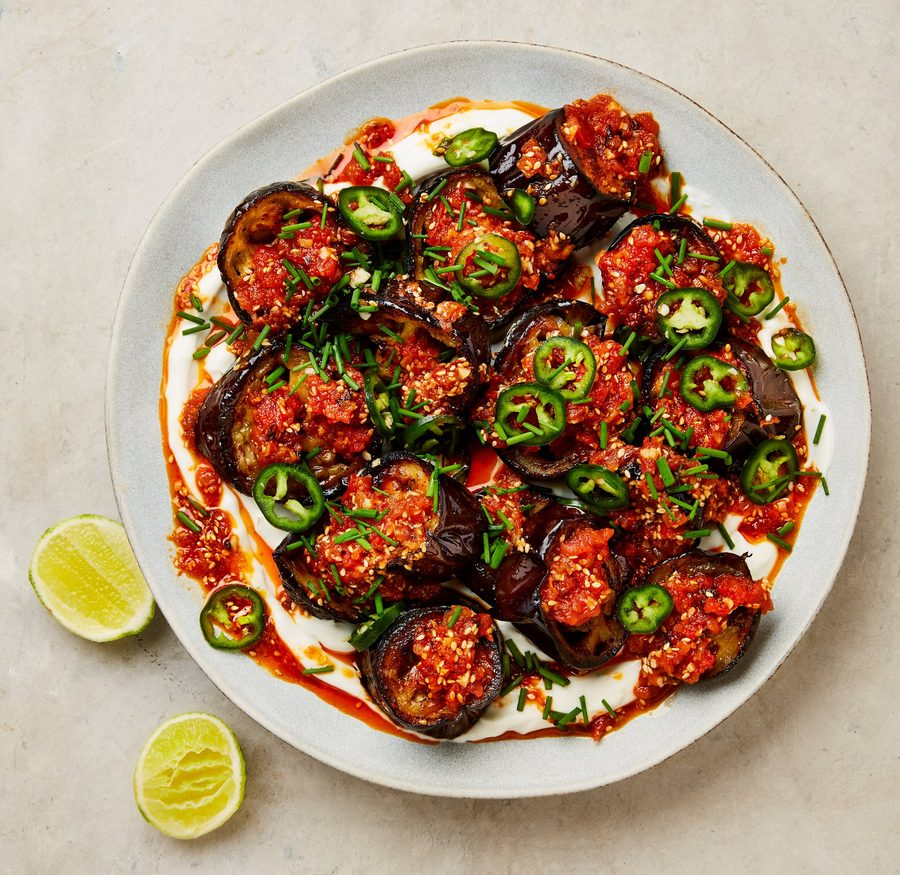

Aubergines with lime yoghurt and tomato, cinnamon and chilli oil

Although the dominant flavours of the chilli oil (habanero and chipotle) take this dish in a Mexican direction, the composition is inspired by Yotam Ottolenghi’s unbeatable formula of flavoured yoghurt base + roasted aubergines + vibrant toppings.
For the lime yoghurt
For the chilli oil
Heat the oven to 250C (230C fan)/475F/gas 9+. Put the aubergines in a large bowl with the oil and fine salt, and mix well. Spread out on a large, flat, parchment-lined baking tray and roast for 20 minutes. Turn the tray, flip over each aubergine round and continue to roast for another 10 minutes, or until both sides of each round are a deep golden brown.
Meanwhile, mix all the ingredients for the yoghurt in a medium bowl and set aside.
To make the chilli oil, spread out the sesame seeds, cinnamon sticks, habanero and star anise in a small frying pan and put on a medium heat. Toast for four minutes, shaking the pan every now and then, until the seeds are golden brown. Tip the seeds on to a plate (leave the cinnamon, habanero and star anise in the pan) and set aside.
Add the onion, salt and two tablespoons of the oil to the pan and return to a medium-high heat. Fry, stirring, for three to three and a half minutes, or until the onion turns golden brown (careful you don’t burn it). Remove from the heat and add the remaining four tablespoons of oil, the garlic, maple syrup, paprika, chipotle, pul biber and tomato paste, and stir well.
Grate the tomatoes on the large holes of a box grater. Add the pulp to a sieve and leave to drain for a minute. Add the drained pulp to the pan with the chilli oil, mix, then return the pan to a medium heat for two minutes, stirring often, until the oil becomes bright red. Discard the habanero, cinnamon sticks and star anise.
Tip the sesame seeds into a mortar with a good pinch of flaked salt and roughly crush to break the seeds and release the flavour, but not so they become powdery. Tip the seeds into the chilli oil and mix.
Spread the yoghurt on a platter and top with the aubergines, leaving space between the rounds so you can see the yoghurt beneath. Spoon over most of the chilli oil and squeeze over some lime juice. Finish with the jalapeno and chives and serve with lime wedges on the side.